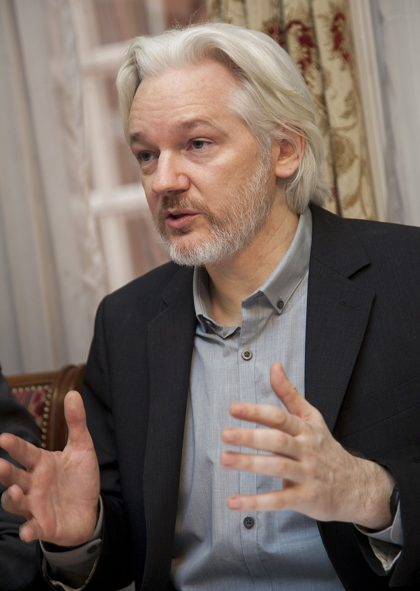

Wikileaks
El término Wikileaks, un guiño semántico a la Wikipedia y a la publicación de información confidencial: Leaks (filtraciones o fugas). De ahí el nombre de WikiLeaks, un sitio de Internet en el que cualquiera puede sacar a la luz documentos que contienen evidencias de hechos ilegales.
La facilidad y simplicidad de la Wikipedia, que permite la aportación de usuarios sin conocimientos técnicos, inspira a la organización de Julian Assange, conocida también como la Wikipedia de los secretos. La única condición que impone WikiLeaks es que los documentos sean auténticos.
WikiLeaks nace, para la opinión pública, en enero de 2007 en el Foro Social Mundial de Kenia.
Julian Assange aprovechaba ese foro para presentar WikiLeaks.
La filtración es un acto antiautoritario. Es inherentemente un acto anarquista.
¿Quién es Julian Assange?
El hacker adolescente de Melbourne, el subversivo de Internet, el objetor indomable, el solitario de los mil recursos y ninguna dirección fija que viaja constantemente con una mochila repleta de ideales y un ordenador portátil que almacena grandes secretos, que son su seguro de vida.
El patrimonio intelectual verdadero no puede ser ligado a la propiedad intelectual
Dejó sus estudios en 2006 cuando ya había empezado a trabajar con otras personas en lo que sería un año después: WikiLeaks. Siete años antes había registrado el dominio Leaks.org
Tres años y nueve meses. Más de un millón de documentos desclasificados. El 95% no han sido verdaderamente investigados. Es la gran lección. La lección de su vida.
Los periodistas han dejado al Estado y a las grandes empresas salirse con la suya.
La destrucción de WikiLeaks
WikiLeaks publicaba un documento catalogado como altamente secreto con las orientaciones básicas para destruir… a WikiLeaks. 32 páginas elaboradas por la contrainteligencia de EE.UU.El plan se justifica, además, en los problemas que WikiLeaks está causando, también, a otros países, que no son precisamente modélicos en el respeto de los Derechos Humanos (China, Israel, Corea del Norte, Rusia, Vietnam y Zimbabwe) dejando bien a las claras las razones para destruir WikiLeaks… o a su portavoz. Afganistán. La mayor filtración de la historia… por ahora
Tres días después de la publicación del vídeo de la matanza provocada desde el helicóptero Apache, un activista de WikiLeaks fue espiado, detenido e interrogado en Islandia, la cacería había comenzado. WikiLeaks se había convertido en un peligro para la “seguridad nacional” de EE.UU pero en Islandia era acogido y colaboraba con los políticos en promover una ley pionera que convertía a aquel país en un refugio para la libertad de expresión, un paraíso.
La vida de Julian Assange estaba en peligro, sus intenciones son públicas, la Casa Blanca conoce al detalle lo que el australiano tiene entre sus manos. En las altas esferas de EE.UU no hay dudas. Hasta el último cable que ha pasado por el ordenador de Bradley Manning está en poder de WikiLeaks y será publicado. Corrupción y cintas de vídeo.
El 25 de julio, WikiLeaks publica en colaboración con tres de los medios más prestigiosos del mundo, la filtración más grande de la historia. Las verdades de la guerra de Afganistán quedan al descubierto. Las mentiras se cuecen mal.
La clave oculta de los Secretos de Estado ha sido descifrada.